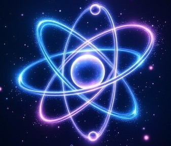
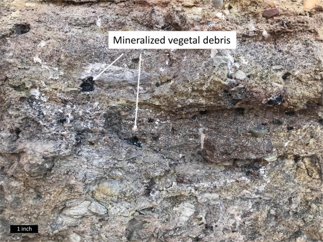
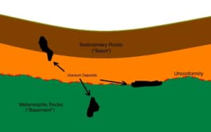
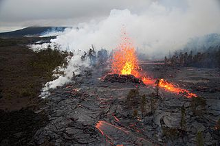
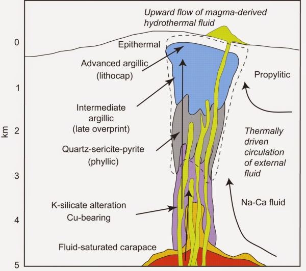
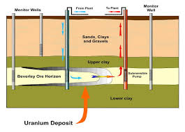
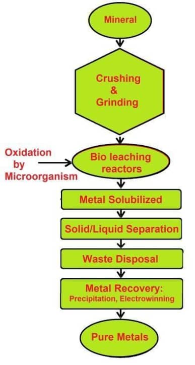

THE FUTURE OF SUSTAINABLE URANIUM AND CLEAN GREEN ENERGY
Welcome
Nuclear energy is key to low-carbon power. Uranium mining must be safe, efficient, and sustainable. This site compares ISR and traditional mining, including new biotech methods.
About Nuclear Energy
Why Nuclear Energy Matters
Nuclear energy is one of the most powerful tools in the global fight against climate change. It produces electricity without releasing carbon dioxide (CO₂), making it a clean and sustainable alternative to fossil fuels. As more countries commit to reducing emissions, nuclear power stands out as a reliable and scalable solution.
Unlike wind or solar, nuclear plants operate 24/7, unaffected by weather. This makes nuclear energy a dependable base-load power source that supports grid stability and ensures energy security.
How It Works
Nuclear energy is generated through a process called fission. In this process, uranium atoms are split to release a large amount of heat. This heat is used to produce steam, which turns turbines and generates electricity. Since it doesn't rely on combustion, there are no greenhouse gases released during normal operation — making it one of the cleanest sources of energy available.

Key Advantages
It produces zero CO₂ emissions during electricity generation.
It provides consistent, uninterrupted electricity day and night.
It has a high energy density, requiring far less fuel than coal or gas.
Modern reactor designs include multiple safety layers, significantly reducing risks.
Rosatom Global Role
Rosatom, the Russian state atomic energy corporation, is a leading global innovator in nuclear technology. It operates more than 30 reactors around the world and continues to develop new solutions for a sustainable future.
Rosatom is working on:
Small Modular Reactors (SMRs) for remote and off-grid locations
Fast reactors that recycle used nuclear fuel
Floating nuclear power plants already in operation
Nuclear-powered hydrogen production and water desalination technologies
These advancements are shaping the future of nuclear energy by making it more flexible, efficient, and environmentally friendly.
80 Years of Russian Nuclear Expertise
1943 – Launch of the Soviet atomic research program
1954 – Opening of the world’s first nuclear power plant in Obninsk
1980s – Expansion of VVER reactor designs worldwide
2007 – Establishment of Rosatom as a global energy company
2020s – Focus on SMRs, floating power plants, and green hydrogen
Uranium is found in many regions around the world, but only certain geological formations allow for it to be mined efficiently and sustainably. These formations are called uranium deposits, and they are classified based on how the uranium got there and the type of rock it's trapped in. Understanding the type of deposit is essential — because it determines whether we use In-Situ Recovery (ISR) or traditional mining methods.
1. Sandstone-Hosted Deposits
Found in porous, water-filled sandstone layers deep underground.
Uranium is dissolved and easily recovered using In-Situ Recovery (ISR).
Found in countries like Kazakhstan, the USA, Uzbekistan, and parts of Namibia.
Ideal for ISR – minimal surface impact, less waste.

2. Unconformity-Related Deposits
Very high-grade uranium trapped deep between older and younger rock layers.
Located mainly in Canada’s Athabasca Basin.
Due to depth and radioactivity, mining must be done through traditional underground methods.
Not suitable for ISR – too deep and geologically complex.

3. Volcanic Deposits
Formed from uranium-bearing fluids in ancient volcanic zones.
Found in parts of Russia, China, Eastern Europe, and South America.
Extraction methods vary based on depth: traditional or, in some cases, ISR if conditions allow.
Sometimes suitable for ISR

4. Vein-Type Deposits
Uranium located in hard-rock fractures, often deep underground.
Found in countries like Australia, France, and the Czech Republic.
Requires traditional underground mining.
Not compatible with ISR

Global Examples of Deposits and Methods
Country
Common Deposit Type
Mining Method Used
Kazakhstan
Sandstone-hosted
✅ ISR (largest global user)
Canada
Unconformity-related
❌ Underground traditional
Australia
Vein + sandstone mix
✅ Both ISR & traditional
Namibia
Alaskite & Calcrete
✅ Open-pit & emerging biotech
USA
Sandstone-hosted
✅ ISR
Russia
Volcanic + sandstone
✅ ISR & traditional
Why This Matters for Extraction Methods
ISR is only possible where uranium is in soft, water-bearing rocks like sandstone or calcrete.
Traditional mining is necessary for hard-rock or deep underground deposits.
Countries with sandstone-rich geology (like Kazakhstan, USA, parts of Namibia) are leading the way in clean, low-impact ISR uranium production.
New biotechnological methods, like bioleaching, are being tested in countries like Namibia and Australia to improve recovery from low-grade or waste material.
Sources:
World Nuclear Association – Types of Uranium Deposits
IAEA – Uranium Mining Overview
ISR vs Traditional Mining
Traditional Open-pit Mining
Feature
Description
Surface Damage
High
Worker Safety
Low
Cost
High
Efficiency
Varies
Water Use
High
In-Situ Recovery (ISR)

Feature
Description
Surface Damage
Minimal
Worker Safety
High
Cost
Lower
Efficiency
High for certain deposits
Water Use
Moderate
5. Biotechnological ISR
Innovation in Uranium Extraction
Biotechnology is transforming uranium mining by making In-Situ Recovery (ISR) even cleaner and more efficient. This modern method, known as bioleaching, uses naturally occurring bacteria to dissolve uranium underground, reducing the need for harsh chemicals.
What is Bioleaching?
Bioleaching involves injecting special microorganisms into uranium-bearing rock underground. These bacteria naturally break down minerals and release uranium into solution, which can then be pumped to the surface.
This technique is especially useful in:
Low-grade uranium deposits
Waste rock or mine tailings
Difficult-to-reach or fragmented ore bodies
Flow diagram:

Step 1: Inject bacteria into well
Step 2: Bacteria break down ore
Step 3: Uranium solution is pumped out for recovery
Environmental Advantages
Bioleaching allows uranium to be extracted without blasting, crushing, or using large volumes of acid. This makes it:
Less harmful to ecosystems
Safer for groundwater when controlled
More compatible with ISR closed-loop systems
It also helps reduce mining waste, since the bacteria can be used to recover uranium from leftover tailings that would otherwise go unused.
How It Works With ISR
Traditional ISR uses acidic or alkaline solutions to leach uranium from ore. With biotechnology, these solutions can be enhanced by adding bacteria that naturally assist in breaking down uranium minerals.
This partnership between biology and mining technology leads to:
Improved uranium recovery rates
Lower chemical use
Reduced surface footprint
Why It Matters
Biotechnological ISR:
Extends the life of existing uranium deposits
Makes low-grade resources economically viable
Supports cleaner, smarter, and more sustainable uranium production
This is especially important in countries with strict environmental laws or sensitive ecosystems. It also opens doors for green mining technologies in future energy strategies.
Modern uranium mining must go beyond extraction. It must protect the environment, support communities, and reduce long-term harm. In-Situ Recovery (ISR), especially when combined with biotechnology, plays a key role in building a more sustainable and responsible uranium industry.
Environmental Impact
Traditional mining causes significant land disruption, creates waste rock and radioactive tailings, and consumes large amounts of energy and water. Restoring mined areas takes decades and often fails to return the land to its original state.
ISR drastically reduces this impact:
No open pits or deep tunnels
Minimal land clearing
Closed-loop systems reuse water
Lower energy use per kilogram of uranium produced
With biotech, the process eliminates or reduces chemical additives, and allows the recovery of uranium from waste materials, cutting down environmental pollution even further.
Economic Sustainability
Traditional mining often requires large upfront investment and long construction times. It also generates costly waste that must be managed for years.
ISR offers better economics:
Faster setup and shutdown
Cheaper operational costs
Ability to mine low-grade deposits profitably
Boosts economic potential for smaller or remote uranium-rich countries
Biotechnological ISR unlocks value from leftover ore, helping mining companies recover more while spending less.
Social & Community Impact
Mining affects people too—not just land. Traditional mines can displace communities, damage water sources, and create hazardous working conditions.
ISR improves social outcomes by:
Creating safer jobs above ground
Using less land, allowing co-existence with farming or grazing
Requiring fewer workers, but in higher-skilled roles
Reducing noise, dust, and long-term health risks
Communities benefit more when mining is cleaner, quieter, and better managed.
Summary
Sustainability Factor
Traditional Mining
ISR (with or without biotech)
Land Disruption
High
Very Low
Waste Produced
Tailings, waste rock
Minimal, liquid recycled
Water Use
High
Moderate, mostly reused
Chemical Use
High
Low (especially with bacteria)
Worker Conditions
Underground, hazardous
Safer, surface-based operations
Long-Term Risk
Radiation, tailings
Contained, easier to decommission
Final Thought
Sustainable uranium extraction is not optional—it's essential. In-Situ Recovery, enhanced by biotechnology, offers a way forward that protects the environment, supports communities, and ensures long-term access to clean nuclear energy. It’s not just better science—it’s a better future.